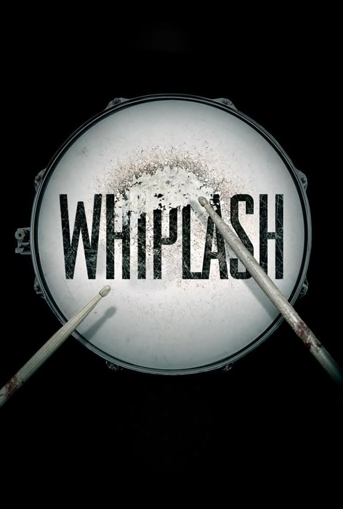

Date de sortie : 1988
Réalisateur : Isao Takahata
Genre : Drame, Animation, Guerre
Acteurs principaux : Tsutomu Tatsumi, Ayano Shiraishi
Note globale : 4.5/5
Un chef-d'œuvre déchirant où la guerre est racontée à hauteur d’enfant, et où l’innocence côtoie la cruauté avec une intensité rare. Une œuvre bouleversante et profondément humaine.
⚠️ Attention : Cette critique contient des spoilers sur le film Grave of the Fireflies ⚠️
Résumé du film
Seita et sa petite sœur Setsuko tentent de survivre dans le Japon ravagé par la Seconde Guerre mondiale après la perte de leur maison et de leur mère. Entre famine, solitude et indifférence des adultes, les deux enfants vont vivre un parcours tragique qui met en lumière la cruauté de la guerre et la fragilité de l’innocence.
Un choc émotionnel
Mon 400ᵉ film, et je ne l'oublierai jamais. Quand on me parlait du Studio Ghibli, j'étais sceptique. Je pensais que tous leurs films étaient surcotés, et ce film me faisait peur : "tire-larmes", scénario basique... Mais dès les premières minutes, j’ai été happé. Ce n’est pas du "basique", c’est d’une humanité et d’une précision narrative qui m’a touché profondément.
La relation entre Seita et Setsuko est magique, directe. On comprend chaque sentiment, chaque besoin, et cette montée de tristesse est subtile mais déchirante. Je n'ai pas pleuré, mais le poids émotionnel est réel, puissant.
Visuels et direction artistique
Le film n'explose pas de couleurs, mais chaque plan est un tableau. L’animation à la main ajoute un charme et un réalisme uniques. La simplicité apparente renforce la puissance émotionnelle : chaque geste, chaque regard, chaque scène respire l’authenticité.
Personnages et humanité
La tante, choisissant l'égoïsme et la survie personnelle plutôt que de soutenir les enfants, est marquante. Son comportement, amplifié par la guerre et la trahison de son mari, montre la fragilité et l'égoïsme humains. La dynamique entre Seita et Setsuko, pleine de maturité et d'innocence, reste gravée en mémoire.

Émotion et immersion
Le film ne cherche pas à manipuler avec des clichés. Chaque scène est vécue comme une expérience humaine, simple et douloureuse. On est immergé dans la guerre à travers les yeux d’enfants, et la souffrance devient palpable. Le souffle de la narration et l’attention aux détails rendent le drame d’autant plus poignant.
Studio Ghibli, maître de l’art narratif
Je m’excuse sincèrement auprès du studio : votre maîtrise est indéniable. La subtilité de l’écriture, l’art visuel, et la justesse émotionnelle font de ce film une œuvre incontournable. Il ne se contente pas de raconter une histoire, il laisse une empreinte, durable et profonde.
Conclusion
Grave of the Fireflies est un film sur la guerre, l’innocence et la résilience. Il est cruel, mais essentiel. Il nous rappelle que la beauté et la souffrance peuvent coexister, et que la narration à hauteur d’enfant peut être d’une force inouïe.
En résumé : une œuvre bouleversante, poignante et nécessaire, que tout amateur de cinéma devrait voir au moins une fois.
Note finale : 4.5/5 ⭐️⭐️⭐️⭐️⭐️½

Envie de continuer votre plongée dans le cinéma ?
Découvrez notre dernière review :
🎬 Whiplash – une leçon de cinéma sur la tension, la passion et la brutalité de la création